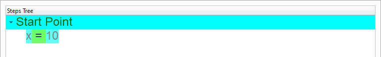
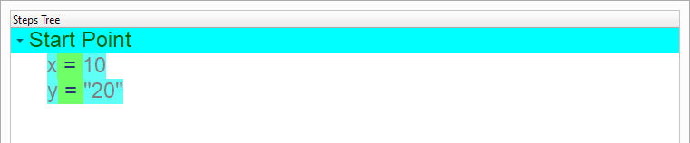
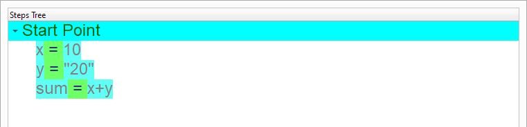
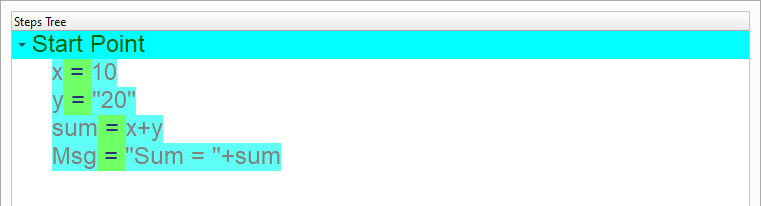

Loop and Condition¶
In this chapter we are going to learn about the Loop and Condition
Introduction¶
We can create this program quickly using the Quick Start component
Program Steps¶
After selecting the (Loop and Condition) template, we will get the next steps in the Goal Designer
Creating the Program¶
To create this program we will use the next components
For Loop
If Statement
Print Text
In the begining the Steps Tree is empty

Select the (For Loop) component

Enter the data in the Interaction Page

The Steps Tree will be updated
Select the (Print Text) component

Enter the data in the Interaction Page

The Steps Tree will be updated
Select the (If Statement) component

Enter the data in the Interaction Page

The Steps Tree will be updated
Select the (Print Text) component
Enter the data in the Interaction Page

Now we have the final Steps Tree in our program
